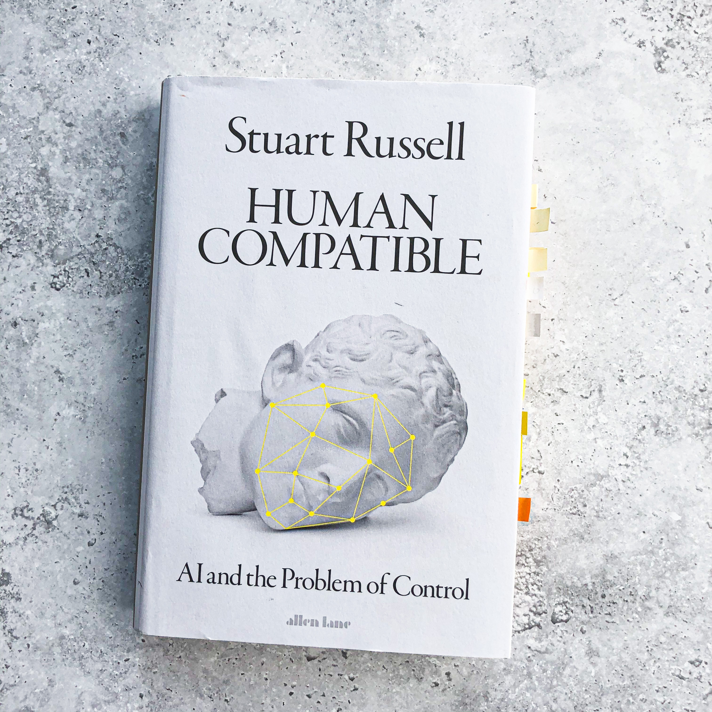

The research in AI is growing without the rules or regulations, but with the common goal of achieving the general purpose AI. Do you notice the problem? With many notable achievements in the field, the AI revolution started with many jumping on the high-speed train. It seems as if any project somehow sounds and looks better if we add a pinch of AI to it. But does it? Are we driving blindly? Most likely. Some researchers already ceased their research efforts because the results and methods are being used in a way that is not beneficial to society. If you are one of the passengers on the high-speed train, please take the blindfold off and read this book to be able to act accordingly before your research goes a step too far.
Human Compatible is an honest, eye-opening account of the AI potential and the right way forward, its current shortcomings, and, if we choose the wrong path, our doom. The question is, how do we create an AI system so that we don’t need to consider the control issue, or lack of control for that matter, in every scenario of AI application? How do we overcome the problem of the AI system being willing to be shut down?
Russell takes us back in history to revisit the routes taken in human learning, decision making, and actions taken, as well as how we transferred the learning process onto a machine. As we know, many applications have the AI label from speech recognition, vision systems, translation, etc. and many more will come. But our overall mission is to develop the so-called general-purpose AI, which by Russell is “…a method that is applicable across all problem types and works effectively for large and difficult instances while making very few assumptions.” Sounds good, but as he notes in many instances across the book, many precautions need to be taken along the way. For example, how to align AI and human objectives, how to incorporate our uncertainties and irrational decisions? In short, we need algorithms that would show that the end goal is beneficial to humans.
If you want a fresh perspective on what constitutes AI, how to adjust our current practices, or the standard model for an AI, more in line with our uncertain preferences and objectives; then, this book will help you in this quest. Stuart Russell, one of the most prominent persons in the AI world, embarks on the mission to not only examine how and why the AI could go wrong but most importantly what to consider and how to proceed so that we, the humanity, don’t end up on the flimsy and half-broken tree branch of existence.
In many science disciplines, we battle with the question of how our reality will cease to exist. In astronomy, it is in the way of the Sun engulfing the Earth, in biology, it might be some deadly virus that spreads quickly and efficiently, in environmental science it is the climate change, in computer science, it is the AI. Due to the laws of physics, we can’t much argue with the Sun engulfing the Earth scenario, but with the AI, we can change the dooms outcome since we are the ones creating it and its laws. In Human Compatible, Russell provides an eye-opening perspective on how to mitigate the AI risk and achieve the human compatible status. The secret lies in how we define the objectives of an AI system and its ability or understanding of the need to be switched off at any time that the human deems essential.
I enjoyed the book, which makes for a smooth and light read due to the elegant, flowy, and transparent presentation of ideas and concepts despite the complexity of the topic. The voice is loud and steady, providing for yet another dimension of the seriousness of the issue. For readers in the AI world, the book does not require much specific pre-knowledge, where the general public may need a bit more context, aside from the Appendix provided, to understand the reasons for the whole gloom and dusk scenarios.
Quotes
Humans are intelligent to the extent that our actions can be expected to achieve our objectives.
Machines are beneficial to the extent that their actions can be expected to achieve our objectives.
References
Russell, S. (2019). Human Compatible: AI and the Problem of Control. Allen Lane, Penguin Random House, UK.